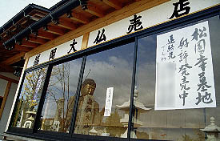

盛岡大仏/岩手県盛岡市
みちのく一人旅である。紅葉レッドゾーン全開の秋の盛岡である。
盛岡市街から車で20分、辺りの山々はすっかり色付いていて鮮やかだ。
すっかり紅葉狩りモード入っていると、その山の上に大仏さんが見えて来た。
これが大仏界のニューフェイス、２年前に出来たという盛岡大仏である。寺の名前は松園寺。
車から降りその山の麓、国道に面した松園寺の山門を潜る。
するといきなり紅葉狩りモードも吹っ飛び、ここが並みの寺でないことが判明する。
俳句が書かれた石の「句碑」が参道沿いにずーーーーーーっと並んでいるのだ。
10枚20枚ならいざ知らず、見渡す限り句碑、句碑、句碑である。
句碑は御影石製の板状のもので大きさは2〜５メートル位。高浜虚子や岡本かの子、芭蕉などなど様々な有名な俳人が詠んだ句が石に刻まれている。あ、刻まれているんじゃなくて黒ペンキ直書きでした。
ちなみに私は俳句に関しては中学生程度の知識しかないが何で有名な句だと言い切れるか、といえば句碑に作者の名前も書かれているからだよ。
一つ一つが様々な大きさで向きもまちまち、こうなると「建設反対！」とか「環境を守れ！」「子供達に安全を」とか書かれているプラカードのようではないか。
ここの句碑とプラカードは文字だけによって構成されている点や力強い文字（言い方を変えればデリカシーのないレタリング）さらにそれらが複数で乱立している、という点で共通している。
両者には失礼だがこういった場合、そこに何が書かれていようと（例えば美しい俳句であろうとだれもが頷く正論であろうと）その内容に関係なく暴力的に空間を支配してしまうのである。右翼の街宣車とかビックカメラのCMとか。
で、呆気に取られながらゆるゆると坂道を登っていく。もちろん句碑が途切れる事はない。
しかし進むに連れて句碑は段々怪し気な雰囲気を漂わせて来た。
最初、山門付近では有名歌人、俳人の句で固めていたラインナップに徐々に素人の作と思われる作者無記名の句が混じり始めた。そして幾らも進まないうちに有名人の句碑はほとんどなくなり、しまいには「根性」「努力」な〜んてのが混じり始めて中だるみ感が漂い始めた頃、大仏の姿が現れる。
大きさは10数メートルといったところか。
周りには大仏さんを囲むように句碑や石像が邪魔なくらい並んでいる。賽銭箱に小銭を投入し、大仏さんの顔を拝もうとすると・・・
君ィ！邪魔じゃないか！どきたまえっ！
鋳造製の大仏さんで台座は石。残念ながら内部空間はない。大仏さんとしては良くまとまっておりまあ、普通の大仏さんだ。ここの寺は歴史の浅い寺のようで、現在行なわれている霊園分譲の客寄せとしての大仏建立だった節がある。閉鎖された売店の悲しき風情よ。

ま、大仏さんは普通だったけど句碑が凄かったからいいか、などと思い帰ろうとしたのだが、ふと横を見ると何とも奇妙な門が目に付いた。ここから先がさらに凄い事になっているとはこの時点では予想だにしていなかった・・・
脚は自然木、棟は竜。何よりもそこに群がる異様な作風の木彫群に釘付けになってしまった。弘法大師、昇り竜、仏像、
虎、凄い。
さらに本堂の前には同じ作風の不動尊像などが並んでいる。うっ、無気味だ。
そして本堂の裏手に回ると成田山の祠と稲荷神社までがあり、その周りには訳の分からない石像が並んでいる。さらにやけに細工の細かい石の塔や福助、チャンスンなどもある。
で、裏門があったので外に出てみる。そこには信じられないような光景が繰り広げられていた。
山の麓の部落からこの裏門までの数百メートルの道沿いにまたしても句碑が並んでいるのだ。
しかも下から続いているその句碑の行列は裏門で終わらず、さらに山の上の方まで延々と続いているのだ。
先程の入口から大仏に至るまでの句碑も凄かったがこちらの方が規模ははるかに大きい、というか長い。
一体、全長にしてどのくらいの距離があるのだろうか。そして何枚の句碑があるのだろうか。
この句碑の行列を見た時、ミャンマーのモンユア、ボディタタウンの裏手に坊さんのコンクリ像がず〜〜〜っと並んでいたのを思いだした。
その時、「この坊さんの行列、どこまで続いているんだろか」と思ったものだ。結局その行列は何処まで続いていたのか、行列の先頭には何があったのか、確認できなかった事を今でもちょっと後悔している私としてはここはひとつこの句碑の行列がどこまで続いているか見届けなければ成るまい、と意を決して山に向かったのであった。
で、坂道を歩いていくとそこにあったのは・・・
何にもない造成地だった。将来はここも墓地になるのであろう。しかしその中を句碑だけが行列を続けている。もはや寺の為の句碑ではなく句碑の為の寺になってしまった感さえある。重機のタイヤの跡が刻まれたその造成地の途中で句碑の行列は突然終わりを迎えていた。なんとも侘びしい結末である。
途中で見かけた墓石捨て場も侘びしさアップに一役買ったのは言うまでもない。
2000.11.
珍寺大道場 HOME